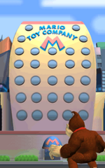
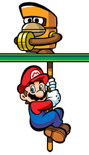

De: La Frikipedia, la enciclopedia extremadamente seria.
De: La Frikipedia, la enciclopedia extremadamente seria. De: La Frikipedia, la enciclopedia extremadamente seria.

|
FRIKIPEDIA QUIERE QUE ESTA DEFINICIÓN
PASE A SER UN ARTÍCULO FRIKIPÉDICO La información contenida en este artículo es una mínima parte de su jugo total, así que ponte los guantes, saca el tupperwere y empieza a exprimir el tema. Si lo haces serás recompensado con una galleta en almíbar y algo más. |
«Todos tenian uno yo solo queria ser popular»
~ Donkey Kong En la corte hablando le al juez
Es el primero de toda la saga MvsDK
La historia comienza cuando DK estaba viendo la tv y pasa un comercial de juegetitos de mario llamados minis mario
y la tele le da mensajes subliminales de que lo compre todos
pero cuando llega ya no hay y curiosamente al lado de la tienda esta la compania fabricante de los juguetes por lo que no se entiende porque tanta demora en llegar los juguetes por lo que el gorila decide hacer su atraco de gran escala a la compania robando hasta a los trabajadores (toad's)
Que mario solo les pagaba cada 12 meses y era una paga de 5 monedas de oro entonces donkey kong sale del edificio con el saco de papas es cuando Mario lo encuentra robando y le dice a donkey quédate quieto quédate quieto y a donkey le vale mierda porque es la polla y Mario sale corriendo detrás de el mientras grita stop motherfucker Mama mía.
| Imagen | Nombre |
|---|---|
|  |
|
|  |
|
Este juego fue tan famoso que comenzó una gran saga sus otros juegos son:
Autor(es):